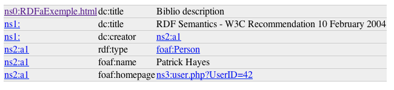
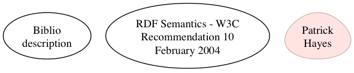
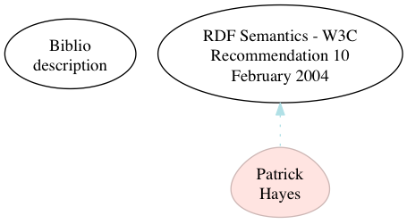

This tool takes full web pages as input. Although you can ask it to render a 'node', you won't get much out of it other than something a bit like an Entity Relationship Diagram.
It's much more interesting if you point it at the output of a 'view', or a list of annotated teasers, because then you see what the relationships between entities are, and how they cluster.
There is no front-end UI built yet, so far you just have to enter the URL you want.
A similar, but much more raw graph (using a similar method) is used for
diagramming a number RDF concepts in formal ducumentation.
An interactive version of that is available at inspector.sindice.com. Or
using other techy tools like Tim BL's Tabulator or Simile's Fresnel
(Unlinked as they are both now defunct).
However, "great big
graphs" suck at communicating linked data.
This module introduces domain-specific rendering options that
can be enabled to tell specific stories better and filter out the less
important connections.
The RDFViz utility publishes RDF Visualizations (node-graphs) under the URL
/rdfviz/{method}/{source_url}
eg
/rdfviz/png/{source_url}
Settings are found at /admin/config/services/rdfviz
There, you can choose from the available rulesets. As different data (stafflists, book indexes, structural information, social graphs) use different vocabularies and occasionally different meanings, you need to select (or create) the correct rules and rulesets to draw the picture that makes the most sense.
For one visualization, you may wish to ensure that each author is linked with their content, or in another you may want to make sure that all content that is tagged is linked to its related content. Or both. As the data gets richer however, you should turn some of these off, as it gets messy fast.
Specialist vocabularies, eg for a network diagram that describes routers, servers, clients and services, are not needed if trying to diagram FOAF relationships, and vice versa. Occasionally they may even conflict, as one mental model that uses (eg) rdfs:broader may be telling a different story with it than another that uses the same predicate.
Short story: start with the default settings (every item is a blob) and then add the additional rules to start giving them visual meaning.
A good place to start, if you are expecting data to show up and it's not yet being rendered on screen, is to look at the 'raw' extracted semantics. EG, /rdfviz/raw/http://www-sop.inria.fr/acacia/fabien/tmp/grddl/rdfaprimer/RDFaExemple.html
 If there is a statement there that's not exposed in the diagram - in this case the dc:creator link between the resource and the author, you should find a way of surfacing it. Visit the settings, and enable the rendering ruleset for 'users'. As well as slightly styling items that are identified as 'Person', it contains the rule to link dc:creator from author to an authors work.
Rulesets are somewhat modelled on the format used by the Drupal 'Rules' module.
A ruleset is a list of labelled rules. Each rule consists of an event trigger, a condition, and an action. Each of these may be multiple, so each of these is a numeric array, even if only one of them exists.
So far only the 'statement_process' event is supported.
Conditions are sets of checks, that may be grouped using OR and AND, and may be nested. Usually the checks then boil down to string matches against the subject or predicate, eg "is the predicate = 'dc:title'" or "is the predicate = 'rdf:typeof' AND the object='foaf:Person' "
'AND' =>
array(
'check_predicate' => array('value' => 'rdf:typeof'),
'check_object' => array('value' => 'foaf:Person'),
)
Actions are reflections of graphviz methods provided by the Image_Graphviz component and usually boil down to the equivalent of function calls with arguments, eg: "Add a node shaped like a note, and filled with solid color"
'addNode' => array('shape' => 'note', 'style' => 'filled' )
Internally, that is a set of arrays that can be modelled in BNF format:
- <ruleset> ::=
- array( { "<string>" => <rule> } );
- <rule> ::=
- array( 'LABEL' => "<string>", 'ON' => array( { <events> } ), 'IF' => <conditions>, 'DO' => <actions> )
- <events> ::=
- array( { 'statement_process' } )
- <conditions> ::=
- array( { <condition> | <nestedcondition> } )
- <condition> ::=
- <valuecheck> => <valuepair> | <multicheck> => <keypairs>
- <valuecheck> ::=
- 'predicate_is' | 'object_is' | 'object_type_is'
- <valuepair> ::=
- array( 'value' => "<string>" )
- <multicheck> ::=
- 'attribute_matches'
- <keypairs> ::=
- array( { "<string>" => "<string>" } )
- <nestedcondition> ::=
- <conditionbool> => array( { <conditions> } )
- <conditionbool> ::=
- 'AND' | 'OR' | 'NOT'
- <actions> ::=
- array( { <action> | <actionoptions> } )
- <action> ::=
- <graphmethod> => <keypairs>
- <graphmethod> ::=
- addNode | addEdge
- <actionoptions> ::=
- { 'reverse => TRUE' }
$rules['label_anything'] = array(
'LABEL' => 'Anything with a dc:title should use that as a label',
'ON' => array(0 => 'statement_process'),
'IF' => array(
0 => array(
'predicate_is' => array(
'value' => 'dc:title',
),
),
),
'DO' => array(
0 => array(
'addNode' => array(
'attributes' => array(
'label' => '!o',
),
),
),
),
);
See the plugin examples for more. The 'default' ones are heavily documented.